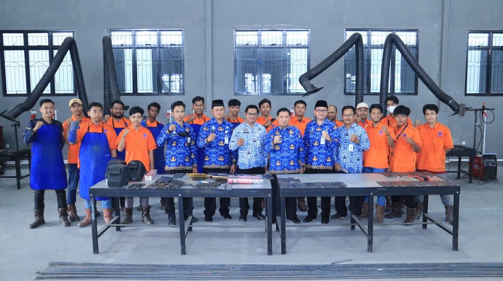

Pelatihan Kompetensi BLK Banjarmasin Wujudkan Para Lulusan Terbaik
Kota Banjarmasin, melalui Dinas Koperasi Usaha Mikro dan Tenaga
Kerja, melaksanakan kegiatan Pelatihan Berdasarkan Unit Kompetensi, di UPTD
Balai Latihan Kerja (BLK) Kota Banjarmasin, Kegiatan tersebut dibuka langsung
oleh, Wali Kota Banjarmasin, H Ibnu Sina, turut hadir Kepala Dinas Koperasi Usaha Mikro dan Tenaga Kerja, H.M Isa Ansari S.E, M.AP, serta jajaran terkait.
Maka dari itu, Ia mengungkapkan kesungguhan dalam berlatih menjadi modal
dalam kesuksesan untuk ke depannya dan ia berharap para peserta BLK
Banjarmasin itu punya kompeten, kompetensi agar diakui dan diterima bekerja di
manapun ingin bekerja.
Hard Skill
Sering disebut dengan keterampilan teknis merupakan jenis keterampilan atau kemampuan yang memiliki sifat bisa langsung terlihat dan juga dipraktekkan.
Beberapa contoh dari hard skill meliputi kemampuan matematika, bahasa pemrograman, keterampilan teknologi informasi, desain grafis, atau kemampuan berbahasa asing
Soft Skill
Salah satu hal penting yang harus dikembangkan di dalam kehidupan ataupun dalam dunia kerja.
Walaupun di sekolah atau universitas kamu berhasil mendapatkan nilai tinggi,
jika tidak berhasil mengasah kemampuan ini dengan baik, kamu berpotensi mengalami kesulitan